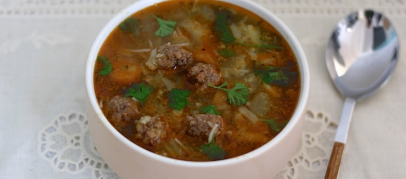

een lekkere soep zonder er veel voor te doen
Ingredienten
- 300 gram rundergehakt
- snuf paprika
- snuf knoflookpoeder
- snuf peper en zout
- 1200ml water
- 2 blokjes groentenbouillon
- 250 gram fijngesneden soepgroenten
- 1 grote ui
- 1 klontje boter
Bereidingswijze
- meng het gehakt met de kruiden en draai er kleine balletjes van.
- smelt de boter in de soeppan.
- fruit de ui aan tot deze bruin begint te kleuren.
- Voeg de soepgroente toe en bak 1 minuutje mee.
- voeg dan het water en de groentenbouillon blokjes toe en breng aan de kook.
- voeg de gehaktballetjes toe en laat de soep nog 10 minuutjes zachtjes doorkoken.

Tip: een lekker afgebakt broodje is ook erg lekker om in de soep te dopen.